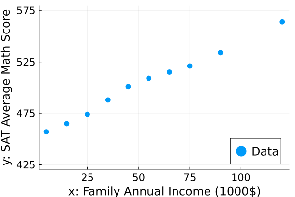
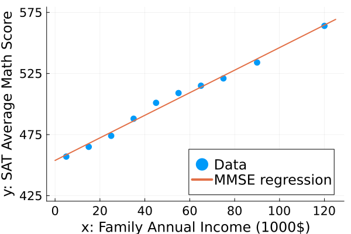

MMSE regression and SAT scores
Illustrate plug-in MMSE estimation using Julia.
The data here comes from the 2007 paper by L. M. Lesser titled Critical Values and Transforming Data: Teaching Statistics with Social Justice and is based on data collected by the College Board, the organization that runs the SAT exam for high-school students. This data includes average SAT Math scores for 10 different family annual income brackets. We use this data to explore the relationship between income and SAT scores via MMSE regression.
This page comes from a single Julia file: regress-mmse.jl.
You can access the source code for such Julia documentation using the 'Edit on GitHub' link in the top right. You can view the corresponding notebook in nbviewer here: regress-mmse.ipynb, or open it in binder here: regress-mmse.ipynb.
Setup
Add the Julia packages used in this demo. Change false to true in the following code block if you are using any of the following packages for the first time.
if false
import Pkg
Pkg.add([
"LinearAlgebra"
"MIRTjim"
"Plots"
"Statistics"
])
endTell Julia to use the following packages. Run Pkg.add() in the preceding code block first, if needed.
using Plots: default, gui, plot!, scatter, savefig
using Statistics: mean
default(); default(label="", markerstrokecolor=:auto, widen=true, linewidth=2,
markersize = 6, tickfontsize = 14, labelfontsize = 16, legendfontsize=16)Data
Normally we would read such data from a data file such as a .csv file using CSV.jl. This data is small enough to just paste here directly.
data = [
"Income Bracket (in \$1000s)" "0 – 10" "10 – 20" "20 – 30" "30 – 40" "40 – 50" "50 – 60" "60 – 70" "70 – 80" "80 – 100" "100+"
"Math" 457 465 474 488 501 509 515 521 534 564
"Verbal" 429 445 462 478 493 500 505 511 523 549
"Writing" 427 440 454 470 483 490 496 502 514 543
];
math = Int.(data[2,2:end]) # math scores10-element Vector{Int64}:
457
465
474
488
501
509
515
521
534
564income = [5:10:75; 90; 120] # middle of each range10-element Vector{Int64}:
5
15
25
35
45
55
65
75
90
120pd = scatter(income, math; label="Data", legend = :bottomright,
xaxis = ("x: Family Annual Income (1000\$)",),
yaxis = ("y: SAT Average Math Score", (425,575), 425:50:575),
)
Maximum-likelihood parameter estimates
phi(x) = [x'; (x').^2] # lift
phi(x) = reshape(x, 1, :) # no lift
X = phi(income)
y = math
n = length(y)
μx = vec(mean(X, dims=2))
μy = mean(y)
Σxx = (X .- μx) * (X .- μx)' / n
Σxy = (X .- μx) * (y .- μy) / n
(;μx, μy, Σxx, Σxy) # show values(μx = [53.0], μy = 502.8, Σxx = [1141.0;;], Σxy = [1053.6])Plug-in estimator
w = Σxx \ Σxy
b = μy - Σxy' * (Σxx \ μx)
f(x) = w' * phi(x) .+ b
xplot = range(0, 125, 126)
yhat = f(xplot)
plot!(pd, xplot, vec(yhat), label = "MMSE regression")
# savefig(pd, "regress-mmse-sat.pdf")
This page was generated using Literate.jl.